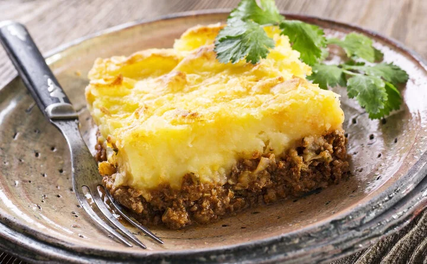

descriçao:
nada
ingredientes
- 1 cebola picada
- 2 colheres (sopa) de óleo vegetal
- 450 g de carne moída
- 800 g de polpa de tomate
- 2 xícaras de purê de batata
- 1 xícara de queijo ralado
- Sal a gosto
modo de preparo
- Preaqueça o forno em temperatura alta (200ºC).
- Refogue a cebola no óleo quente até dourar.
- Coloque então a carne moída e deixe dourar também.
- Adicione em seguida a polpa de tomate, tempere com sal a gosto e cozinhe até secar.
- Espalhe a carne no fundo de um refratário, cubra com o purê e finalize com queijo ralado.
- Leve ao forno e asse por 10 minutos, ou até o queijo derreter. Sirva quente.